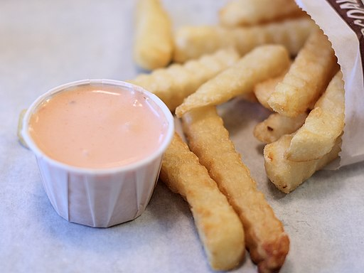

What is fry sauce?
Fry sauce at its essence is just two ingredients: one part ketchup and two parts mayonnaise mixed until combined. This simple combination makes for an incredibly popular dipping sauce that is most famous for its widespread, fast-food, French fry dipping use in Utah and surrounding areas.
Who uses fry sauce?
People who have always lived in or near Utah might be surprised to learn that the rest of the world uses all kinds of sauces for their French fries. Ketchup is commonly used by most Americans, and Mayonnaise is common in Europe. With a few exceptions in South America, the ketchup and mayo combo on fries is a traditional Utah practice.
Why it is great:

The two biggest contenders with fry sauce are its very own components, mayonnaise and ketchup. The two are very different sauces. Mayonnaise is almost all fat. It is creamy and complements the simple flavor of the salty fried starch very well much like sour cream and butter on a baked potato. On the other hand, ketchup is almost all sugar which adds a sweet acidic flavor to the fries.
Why not get the best of both worlds? By combining the two you get the creamy qualities of mayonnaise that work so nice with potatoes along with a bit of flavor and sweetness from the ketchup. That is what makes fry sauce an excellent choice.